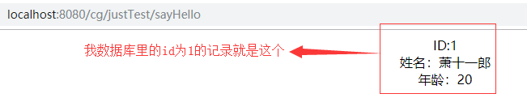

Mybatis是一款持久层的框架，使用Mybatis我们无需自己编写繁琐的JDBC代码，也无需为sql注入等安全问题烦恼。没用过Hibernate哈哈哈，无法做比较。好像现在市面上都是用Mybatis了叭=-=
然后为了方便之后写一些Mybatis相关的demo，首先需要搭建好能够运行Mybatis的环境，接下来就是结合Spring来搭建Mybatis的过程。
下面的Maven的依赖配置是一个完整的ssm依赖配置。包括了之后会用得到的Gjson和log4j等。此外，注意我的pom.xml在build里配置了一个resources ，代表我的src/main/java路径下的xml文件也会被认作项目的资源文件（否则利用Mybatis的扫描方式配置的mapper将不起作用 ），pom.xml配置如下：
<?xml version="1.0" encoding="UTF-8"?>
<project xmlns="http://maven.apache.org/POM/4.0.0" xmlns:xsi="http://www.w3.org/2001/XMLSchema-instance"
xsi:schemaLocation="http://maven.apache.org/POM/4.0.0 http://maven.apache.org/xsd/maven-4.0.0.xsd">
<modelVersion>4.0.0</modelVersion>
<groupId>com.company.struct</groupId>
<artifactId>artifact</artifactId>
<version>1.0-SNAPSHOT</version>
<packaging>war</packaging>
<name>artifact Maven Webapp</name>
<!-- FIXME change it to the project's website -->
<url>http://www.example.com</url>
<properties>
<project.build.sourceEncoding>UTF-8</project.build.sourceEncoding>
<maven.compiler.source>1.7</maven.compiler.source>
<maven.compiler.target>1.7</maven.compiler.target>
<!-- spring的版本 -->
<spring.version>5.1.5.RELEASE</spring.version>
<!-- mybatis的版本 -->
<mybatis.version>3.4.6</mybatis.version>
<!-- mybatis/spring包 -->
<mybatis-spring.version>1.3.2</mybatis-spring.version>
<!-- servlet核心包 -->
<servlet-api.version>4.0.1</servlet-api.version>
<!-- slf4j日志文件管理包版本 -->
<slf4j.version>1.7.1</slf4j.version>
</properties>
<!-- 各种依赖包-->
<dependencies>
<dependency>
<groupId>junit</groupId>
<artifactId>junit</artifactId>
<version>4.11</version>
<!-- 表示开发的时候引入，发布的时候不会加载此包 -->
<scope>test</scope>
</dependency>
<!--spring核心包-->
<dependency>
<groupId>org.springframework</groupId>
<artifactId>spring-context</artifactId>
<version>${spring.version}</version>
</dependency>
<dependency>
<groupId>org.springframework</groupId>
<artifactId>spring-core</artifactId>
<version>${spring.version}</version>
</dependency>
<dependency>
<groupId>org.springframework</groupId>
<artifactId>spring-beans</artifactId>
<version>${spring.version}</version>
</dependency>
<dependency>
<groupId>org.springframework</groupId>
<artifactId>spring-context-support</artifactId>
<version>${spring.version}</version>
</dependency>
<dependency>
<groupId>org.springframework</groupId>
<artifactId>spring-aop</artifactId>
<version>${spring.version}</version>
</dependency>
<dependency>
<groupId>org.springframework</groupId>
<artifactId>spring-aspects</artifactId>
<version>${spring.version}</version>
</dependency>
<dependency>
<groupId>org.springframework</groupId>
<artifactId>spring-expression</artifactId>
<version>${spring.version}</version>
</dependency>
<dependency>
<groupId>org.springframework</groupId>
<artifactId>spring-jdbc</artifactId>
<version>${spring.version}</version>
</dependency>
<dependency>
<groupId>org.springframework</groupId>
<artifactId>spring-orm</artifactId>
<version>${spring.version}</version>
</dependency>
<dependency>
<groupId>org.springframework</groupId>
<artifactId>spring-tx</artifactId>
<version>${spring.version}</version>
</dependency>
<dependency>
<groupId>org.springframework</groupId>
<artifactId>spring-web</artifactId>
<version>${spring.version}</version>
</dependency>
<dependency>
<groupId>org.springframework</groupId>
<artifactId>spring-webmvc</artifactId>
<version>${spring.version}</version>
</dependency>
<!--mybatis包-->
<dependency>
<groupId>org.mybatis</groupId>
<artifactId>mybatis</artifactId>
<version>${mybatis.version}</version>
</dependency>
<!-- mybatis/spring包 -->
<dependency>
<groupId>org.mybatis</groupId>
<artifactId>mybatis-spring</artifactId>
<version>${mybatis-spring.version}</version>
</dependency>
<!-- mysql数据库 -->
<dependency>
<groupId>mysql</groupId>
<artifactId>mysql-connector-java</artifactId>
<version>8.0.11</version>
</dependency>
<!-- 添加servlet核心包 -->
<dependency>
<groupId>javax.servlet</groupId>
<artifactId>javax.servlet-api</artifactId>
<scope>provided</scope>
<version>${servlet-api.version}</version>
</dependency>
<!--配置Gson-->
<dependency>
<groupId>com.google.code.gson</groupId>
<artifactId>gson</artifactId>
<version>2.3.1</version>
</dependency>
<!--数据库连接池druid -->
<dependency>
<groupId>com.alibaba</groupId>
<artifactId>druid</artifactId>
<version>1.0.24</version>
</dependency>
<!--
日志文件管理包
slf4j-log4j12 是slf4j与日志log4j的整合jar包，
这个jar包会自动引入其log4j-1.2.17.jar的实现jar ，
因此项目中pom.xml引入slf4j-log4j12的依赖即可
-->
<dependency>
<groupId>org.slf4j</groupId>
<artifactId>slf4j-log4j12</artifactId>
<version>${slf4j.version}</version>
</dependency>
<!-- 引入jstl-->
<!-- 需要注意，有的web.xml版本会屏蔽El表达式，需要手动开启，或者web.xml中声明-->
<dependency>
<groupId>javax.servlet</groupId>
<artifactId>jstl</artifactId>
<version>1.2</version>
</dependency>
<dependency>
<groupId>taglibs</groupId>
<artifactId>standard</artifactId>
<version>1.1.2</version>
</dependency>
</dependencies>
<build>
<finalName>artifact</finalName>
<pluginManagement><!-- lock down plugins versions to avoid using Maven defaults (may be moved to parent pom) -->
<plugins>
<plugin>
<artifactId>maven-clean-plugin</artifactId>
<version>3.1.0</version>
</plugin>
<!-- see http://maven.apache.org/ref/current/maven-core/default-bindings.html#Plugin_bindings_for_war_packaging -->
<plugin>
<artifactId>maven-resources-plugin</artifactId>
<version>3.0.2</version>
</plugin>
<plugin>
<artifactId>maven-compiler-plugin</artifactId>
<version>3.8.0</version>
</plugin>
<plugin>
<artifactId>maven-surefire-plugin</artifactId>
<version>2.22.1</version>
</plugin>
<plugin>
<artifactId>maven-war-plugin</artifactId>
<version>3.2.2</version>
</plugin>
<plugin>
<artifactId>maven-install-plugin</artifactId>
<version>2.5.2</version>
</plugin>
<plugin>
<artifactId>maven-deploy-plugin</artifactId>
<version>2.8.2</version>
</plugin>
</plugins>
</pluginManagement>
<resources>
<resource>
<directory>src/main/java</directory>
<includes>
<include>**/*.xml</include>
</includes>
<filtering>true</filtering>
</resource>
</resources>
</build>
</project>在web.xml里配置Spring的配置文件路径，这里使用了通配符*，意思是加载所有以applicationContext开头的xml文件，配置如下：
<!-- 加载spring容器 -->
<context-param>
<param-name>contextConfigLocation</param-name>
<param-value>classpath:spring/applicationContext*.xml</param-value>
</context-param>
<listener>
<listener-class>org.springframework.web.context.ContextLoaderListener</listener-class>
</listener>前面配置了Spring的xml的加载路径，现在就是创建一个Spring的xml，叫做applicationContextDao.xml，位于资源路径下的spring路径下。配置如下：
<?xml version="1.0" encoding="UTF-8"?>
<beans xmlns="http://www.springframework.org/schema/beans"
xmlns:xsi="http://www.w3.org/2001/XMLSchema-instance"
xmlns:context="http://www.springframework.org/schema/context"
xsi:schemaLocation="http://www.springframework.org/schema/beans http://www.springframework.org/schema/beans/spring-beans.xsd http://www.springframework.org/schema/context http://www.springframework.org/schema/context/spring-context.xsd">
<!-- 加载数据库连接池DRUID的配置文件 -->
<context:property-placeholder location="classpath:properties/db.properties"/>
<!-- 数据库连接池 -->
<!-- 数据源 -->
<bean id="dataSource" class="com.alibaba.druid.pool.DruidDataSource" init-method="init" destroy-method="close">
<!-- 基本属性 url、user、password -->
<property name="driverClassName" value="${jdbc.driverClassName}"/>
<property name="url" value="${jdbc.url}"/>
<property name="username" value="${jdbc.username}"/>
<property name="password" value="${jdbc.password}"/>
<!-- 配置初始化大小、最小、最大 -->
<property name="initialSize" value="${druid.initialSize}"/>
<property name="minIdle" value="${druid.minIdle}"/>
<property name="maxActive" value="${druid.maxActive}"/>
<!-- 配置获取连接等待超时的时间 -->
<property name="maxWait" value="${druid.maxWait}"/>
<!-- 配置间隔多久才进行一次检测，检测需要关闭的空闲连接，单位是毫秒 -->
<property name="timeBetweenEvictionRunsMillis" value="${druid.timeBetweenEvictionRunsMillis}"/>
<!-- 配置一个连接在池中最小生存的时间，单位是毫秒 -->
<property name="minEvictableIdleTimeMillis" value="${druid.minEvictableIdleTimeMillis}"/>
<property name="validationQuery" value="${druid.validationQuery}"/>
<property name="testWhileIdle" value="${druid.testWhileIdle}"/>
<property name="testOnBorrow" value="${druid.testOnBorrow}"/>
<property name="testOnReturn" value="${druid.testOnReturn}"/>
<!-- 打开PSCache，并且指定每个连接上PSCache的大小 如果用Oracle，则把poolPreparedStatements配置为true，mysql可以配置为false。-->
<property name="poolPreparedStatements" value="${druid.poolPreparedStatements}"/>
<property name="maxPoolPreparedStatementPerConnectionSize"
value="${druid.maxPoolPreparedStatementPerConnectionSize}"/>
<!-- 配置监控统计拦截的filters -->
<property name="filters" value="${druid.filters}"/>
<!-- Start 慢sql监控及log4j设置-->
<!-- <property name="proxyFilters">-->
<!-- <list>-->
<!-- <ref bean="stat-filter"/>-->
<!-- <ref bean="log-filter"/>-->
<!-- </list>-->
<!-- </property>-->
<!-- End 慢sql监控及log4j设置,不想监控的话将proxyFilters属性删除即可 -->
</bean>
<!--日志记录-->
<bean id="log-filter" class="com.alibaba.druid.filter.logging.Log4jFilter">
<property name="dataSourceLogEnabled" value="true" />
<property name="statementExecutableSqlLogEnable" value="true" />
</bean>
<!-- 配置mybatis的sqlSessionFactory -->
<bean id="sqlSessionFactory" class="org.mybatis.spring.SqlSessionFactoryBean">
<!-- 数据库连接池 -->
<property name="dataSource" ref="dataSource" />
<!-- 加载mybatis的全局配置文件 -->
<property name="configLocation" value="classpath:mybatis/sqlMapConfig.xml" />
</bean>
<!-- 配置mybatis的mapper扫描器 -->
<!-- mapper批量扫描，从mapper包中扫描出mapper接口，自动创建代理对象并且在spring容器中注册
遵循规范：将mapper.java和mapper.xml映射文件名称保持一致，且在一个目录 中
自动扫描出来的mapper的bean的id为mapper类名（首字母小写）
-->
<bean class="org.mybatis.spring.mapper.MapperScannerConfigurer">
<property name="basePackage" value="com.test.ssm.mapper"></property>
<property name="sqlSessionFactoryBeanName" value="sqlSessionFactory"/>
</bean>
<!-- <context:component-scan base-package="com.test.ssm"/>-->
</beans>Notice: 我使用的数据库连接池为阿里的DRUID，日志框架为log4j，数据库连接池的配置文件位于资源路径下的properties/db.properties，配置的mybatis的全局配置文件位于资源路径下的mybatis/sqlMapConfig.xml。然后我使用的是mybatis的扫描方式配置mapper，扫描的包是com.test.ssm.mapper。此外的两个坑：如果不配置Spring的组件扫描，将不能再Controller里自动注入标注了@Service的组件；mysql8需要指定数据库驱动为com.mysql.cj.jdbc.Driver，并且需要设定时区 关于db.properties的配置，就是需要注意mysql高版本需要配置driverClassName。sqlMapConfig.xml我暂时还没写具体的配置。db.properties配置如下：
# database configure
jdbc.driverClassName=com.mysql.cj.jdbc.Driver
jdbc.url=jdbc:mysql://localhost:3306/ssm?useUnicode=true&characterEncoding=utf8&useSSL=false&serverTimezone=Hongkong
jdbc.username=root
jdbc.password=123456
# druid datasource
druid.initialSize=10
druid.minIdle=10
druid.maxActive=50
druid.maxWait=60000
druid.timeBetweenEvictionRunsMillis=60000
druid.minEvictableIdleTimeMillis=300000
druid.validationQuery=SELECT 1
druid.testWhileIdle=true
druid.testOnBorrow=false
druid.testOnReturn=false
druid.poolPreparedStatements=false
druid.maxPoolPreparedStatementPerConnectionSize=20
druid.filters=wall,statNotice: 我的数据库ssm里有一个叫user的表，其列和User实体的属性对应。然后就是我配置了Spring的组件扫描，扫描整个com.test.ssm。我配置在其他的文件中，没有贴出来，applicationContextDao.xml里最后的<context:component-scan base-package="com.test.ssm"/>就是组件扫描，只不过我配置在了其他地方所以注释了此行。
步骤1的代码：
package com.test.ssm.pojo;
public class User {
private String name;
private int age;
private int id;
public int getId() {
return id;
}
public String getName() {
return name;
}
public int getAge() {
return age;
}
@Override
public String toString() {
return "User{" +
"id=" + id +
", name='" + name + '\'' +
", age=" + age +
'}';
}
}步骤2的代码：
package com.test.ssm.mapper;
import com.test.ssm.pojo.User;
public interface UserMapper {
public User findUserById(int id) throws Exception;
}步骤3的代码：
<?xml version="1.0" encoding="UTF-8" ?>
<!DOCTYPE mapper
PUBLIC "-//mybatis.org//DTD Mapper 3.0//EN"
"http://mybatis.org/dtd/mybatis-3-mapper.dtd">
<mapper namespace="com.test.ssm.mapper.UserMapper">
<!-- 查询用户信息 -->
<select id="findUserById" parameterType="java.lang.Integer" resultType="com.test.ssm.pojo.User">
select * from user where id=#{id}
</select>
</mapper>步骤4的代码：
package com.test.ssm.service;
import com.test.ssm.pojo.User;
public interface UserService {
public User findUserById(int id) throws Exception;
}步骤5的代码：
package com.test.ssm.service.implement;
import com.test.ssm.mapper.UserMapper;
import com.test.ssm.pojo.User;
import com.test.ssm.service.UserService;
import org.springframework.beans.factory.annotation.Autowired;
import org.springframework.stereotype.Service;
@Service
public class UserServiceImpl implements UserService {
@Autowired
private UserMapper userMapper;
@Override
public User findUserById(int id) throws Exception {
//System.out.println("实现类！");
return userMapper.findUserById(id);
}
}步骤6的代码：
package com.test.ssm.web.controller;
import com.test.ssm.pojo.User;
import com.test.ssm.service.UserService;
import org.springframework.beans.factory.annotation.Autowired;
import org.springframework.stereotype.Controller;
import org.springframework.ui.Model;
import org.springframework.web.bind.annotation.RequestMapping;
@Controller
@RequestMapping("justTest")
public class TestController{
@Autowired
private UserService userService;
@RequestMapping("sayHello")
public String sayHello(Model model){
try {
User a=userService.findUserById(1);
model.addAttribute("user",a);
} catch (Exception e) {
e.printStackTrace();
}
return "hello";
}
}hello视图的代码：
<%@ page contentType="text/html;charset=UTF-8" language="java" %>
<%@ taglib uri="http://java.sun.com/jsp/jstl/core" prefix="c"%>
<%@ page isELIgnored="false"%>
<html>
<head>
<title>hello World</title>
</head>
<body>
<center>
ID:${user.id}<br/>
姓名：${user.name}<br/>
年龄：${user.age}<br/>
</center>
</body>
</html>访问测试结果：
